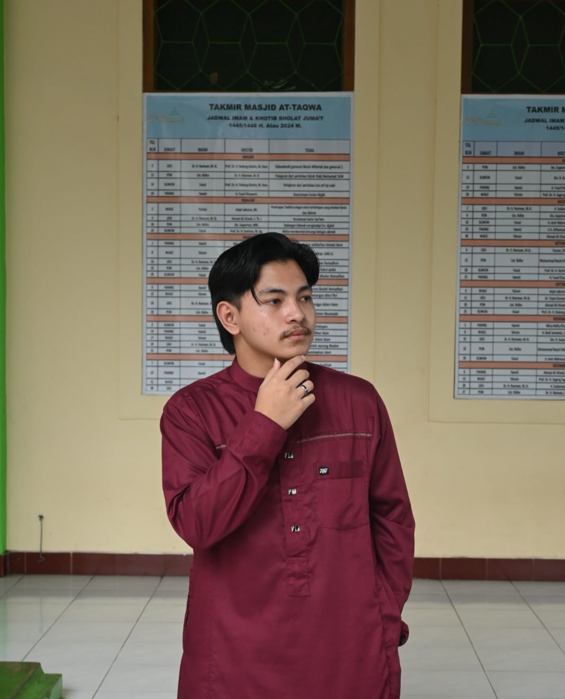

Saya adalah anak muda yang bersemangat dengan pengalaman membangun aplikasi modern. Suka belajar hal baru dan menciptakan solusi kreatif. Saat ini fokus di Pengembangan WEB dan Membangun Komunikasi dengan banyak orang.
Menjadi kasir dan sekaligus menjadi Diver Motor bagi pelanggan yang ingin barangnya di antar ke tujuan.
Klik untuk lihat lokasi di Google MapsMasih menempuh Studi Semester 4.
Klik untuk lihat lokasi kampus di Google MapsSelama di pesantren, aktif mengikuti kegiatan harian (shalat berjamaah, tahfidz, dan kajian Fiqih) dan menjadi pengurus asrama santri putra.
Klik untuk lihat lokasi di Google Maps⚡ Ingin belajar hal baru & Menambah banyak ilmu — ❤️